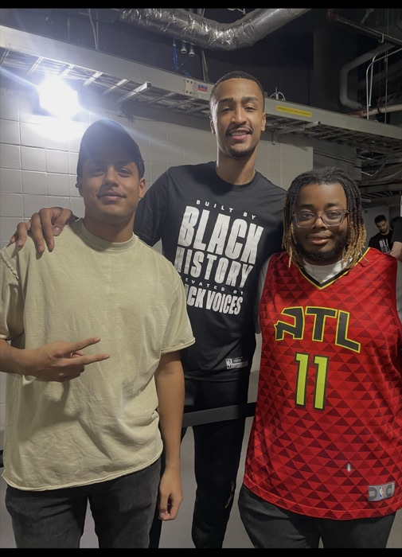
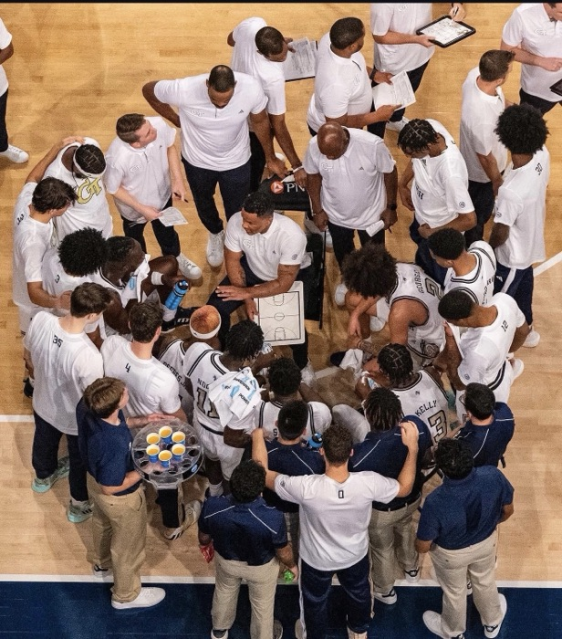
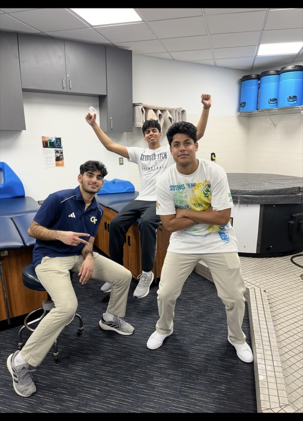

Atlanta, GA
Hi, I’m Shreyash Jha!
Product & analytics at Inspire Brands, working on loyalty, personalization, experimentation, growth, and AI
I’m a Product Analyst at Inspire Brands and a recent Georgia Tech grad with an M.S. and B.S. in Economics. I’m eager to keep learning and willing to go above and beyond to provide value with every opportunity.
The scale I’ve operated at
-
200M+
Customers in the loyalty and personalization programs I support at Inspire Brands.
-
150M+
Users on the streaming platform whose technology and security controls I evaluated at PwC.
-
68,000+
Athletes in the performance database I built and maintained at Reel Analytics.
-
$1.5M
Value generated by the data initiative I supported through a Tableau to Power BI migration.
About
Economics taught me to ask why first.
I started in economics because I was drawn to the frameworks it gives you for organizing complex problems, understanding tradeoffs, and making decisions with incomplete information. That way of thinking has shaped how I approach every role since.
A recurring theme in my work has been taking something messy and making it useful. I’ve brought together fragmented data from different sources, defined the structure behind it, and helped turn it into scalable products and systems that people can actually use. Those experiences taught me that I enjoy the earliest stages of building most: understanding the problem, deciding what matters, testing assumptions, and creating something from zero that can grow.
That is what pulled me toward product management. I like working at the intersection of users, data, business strategy, and technology, especially when the problem is ambiguous and the path forward has to be created rather than followed.
Outside of work, I’m a lifelong basketball fan and spent two seasons breaking down film for Georgia Tech’s Division I program.
Experience
Where I’ve worked.
Professional
-
Consumer & Product Analyst
Inspire Brands
Jan 2026 – Present
Arby’s · Buffalo Wild Wings · Baskin-Robbins · Dunkin’ · Jimmy John’s · Sonic
I own analytics for loyalty and personalized marketing across 200M+ customers, including the consumer analysis that informed Arby’s in-app points program. I design test-control experiments to measure what actually moves conversion, and I automated reporting workflows that give the team back 6+ hours a week.
- Product Analytics
- Experimentation
- Personalization
- Loyalty
-
Data Analyst
Inspire Brands
May 2024 – Aug 2024
I built a growth and market-share strategy for BWW GO aimed at customers under 25, and helped migrate the team’s Tableau dashboards to Power BI as part of an initiative that generated $1.5M in value. I also restructured a data pipeline covering 2,000+ Jimmy John’s menu items.
- Growth Strategy
- Power BI
- Data Pipelines
-
Technology Risk Analyst
PwC
Jun 2025 – Aug 2025
I evaluated technology, security, and operational controls for a streaming platform serving 150M+ users, working across four PwC teams and 50+ stakeholders to close evidence gaps and support audit readiness. A useful lesson in how much product work is shaped by constraints users never see.
- Technology Risk
- Stakeholder Management
- Process Automation
-
Financial Analyst
Allianz Commercial
May 2023 – Aug 2023
I evaluated financial and operational risk for 300+ Amazon Delivery Service Provider clients across accounts valued above $150M, and wrote the Excel-based SOPs the team used to standardize risk review and client communication.
- Risk Analysis
- Process Design
Product & Leadership
-
Product Lead
Reel Analytics
Jan 2023 – May 2024
I led an end-to-end analytics project to build and maintain a database of performance metrics for 68,000+ athletes, managed the ETL workflows behind it, and translated data-quality findings into product recommendations for the CEO. I also led development of an ML player-classification model built on computer-vision data.
- Product Leadership
- SQL & ETL
- ML / Computer Vision
-
Statistics & Film Analyst
Georgia Tech Men’s Basketball
Aug 2023 – May 2025
I analyzed team film with Sportscode to identify play patterns and built statistical models evaluating player performance, feeding both into coaching decisions for a Division I program.
- Statistical Modeling
- Sportscode
-
Product Lead, Health Care Research
Georgia Tech VIP Program
Jan 2024 – May 2026
I built and validated a dataset covering 200+ U.S. hospital M&A transactions to study industry consolidation, and presented award-winning research on gaps in CMS ownership data and hospital M&A reporting.
- Research
- Data Validation
Education & Learning
Proud to call Georgia Tech home.
Georgia Institute of Technology
- M.S. Economics May 2026
- B.S. Economics Minor in Computational Data Analysis May 2025
More than the classroom
-
Georgia Tech Economics Club
Vice President
Led speaker, employer, and networking events for a community of 300+ students.
-

GT Sports Business Club
Vice President, Club Engagements
Connected students with leaders across Atlanta’s sports industry, including the InnovATL Case Competition.
-


Georgia Tech Men’s Basketball
Statistics & Film Analyst
Two seasons breaking down film, player-tracking data, and performance trends for a Division I program.
-
GT Student Foundation Investments Committee
Committee Member
Markets, value investing, financial modeling, and investment decisions inside the student-managed fund.
-
Atlanta Hawks
Guest Experience
Game nights and events at State Farm Arena, working with season ticket holders and VIP guests.
Tools I use
- SQL
- Python
- R
- Java
- Excel
- Snowflake
- Databricks
- Power BI
- Jira
- Claude
- ChatGPT
- Copilot
Certifications & ongoing learning
- Google Search Ads Certification Google Skillshop
I’d rather keep this list short than pad it with courses that didn’t teach me much, so it fills up as I finish things worth sharing.
Contact
Let’s talk.
I’m looking to grow my career in product management. If that’s something you’re hiring for, or you just want to compare notes on product and data, feel free to reach out below!